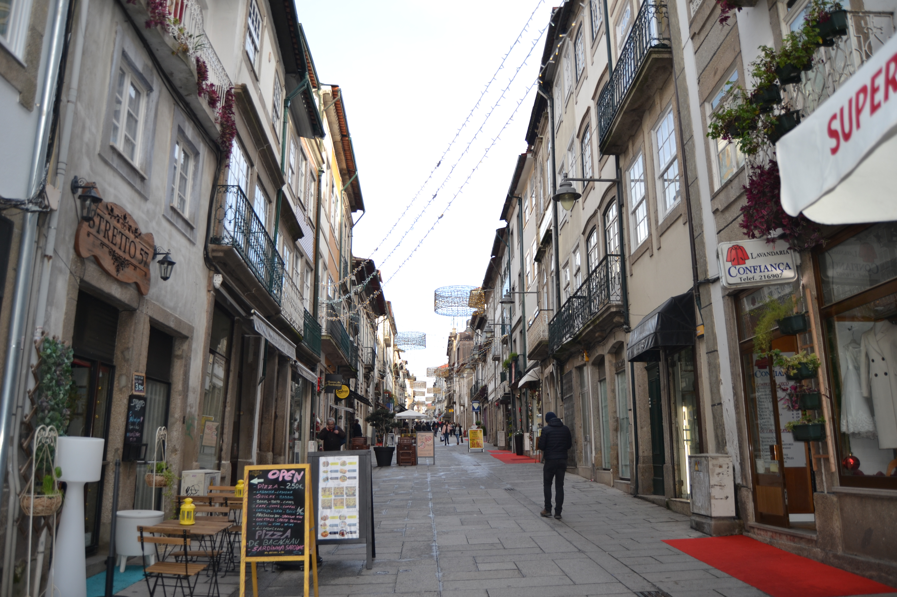

Legenda:Rua Nova - vista norte.

Legenda:Rua Nova - vista sul.
Legenda:Rua Atual

Legenda:Rua Atual
Número: 1, Enfiteuta: None,Foro: None, Descrição: É morada dos Sacristãos da Sé. Parte desta casa pertence à obra da Sé e a restante
à Irmandade da Misericórdia. A parte da obra da Sé confronta, de nascente, com casas da dita Irmandade (antigas
casas foreiras à Capela da senhora da Glória) e, de poente, com a casa nº2. O prazo
era constituído por casa, com ênxido ao redor da capela da Senhora da Piedade de Jesus da Misericórdia.
Número: 2, Enfiteuta: João Gomes da Cruz, ourives, e sua mulher, Angélica Maria de Araújo,Foro: 120 reis e 1 galinha, Descrição: Não disponível
Número: 3, Enfiteuta: Rosa Vitória, viúva de João da Silva,Foro: 70 reis e 2 galinhas, Descrição: Não disponível
Número: 4, Enfiteuta: Manuel Pereira Tadim,Foro: 50 reis e 1 galinha, Descrição: Confronta, de poente, com casa que se situa nos antigos açouges.
Número: 5, Enfiteuta: Teresa Tomásia, viúva de Agostinho Marques da Silva, ourives.,Foro: 200 reais e 2 galinhas, Descrição: A casa nº6 foi construída depois do ano de 1543. Desde o ano de 1644 que as casas nº7 e 8 da Rua dos Açougues Velhos, por baixo do nº6.Foi
construída em 1543, em pertenças do prazo da casa nº5. No ano de 1641 foram-lhe unidas as traseiras do nº5 da Rua dos Açougues Velhos.
Número: 6, Enfiteuta: Teresa Tomásia, viúva de Agostinho Marques da Silva, ourives.,Foro: 50 reis e 1 galinha, Descrição: A casa nº6 foi construída depois do ano de 1543. Desde o ano de 1644 que as casas nº7 e 8 da Rua dos Açougues Velhos, por baixo do nº6.Foi
construída em 1543, em pertenças do prazo da casa nº5. No ano de 1641 foram-lhe unidas as traseiras do nº5 da Rua dos Açougues Velhos.
Número: 7, Enfiteuta: António Fernandes Veloso, ourives de prata, e sua mulher, Assunção Vieira,Foro: 60 reis e 1 galinha, Descrição: Confronta, de poente, com casa for. ao morgado de Real.Possui uma porta de serventia para a Rua dos Açougues Velhos, por baixo do nº6.Foi construída em 1543
, em pertenças do prazo da casa nº5.No ano de 1641 foram-lhe unidas as traseiras do nº5 da Rua dos Açougues Velhos.
Número: 8, Enfiteuta: Vid. casa nº32, Rua de Maximinos(rua nº22).,Foro: None, Descrição: Foi construída, depoisde 1707, no lugar de uma cozinha pertencente ao nº10, ao qual paga, de pensão ou foro, 60 reis. Confronta, do nascente, com o nº8 e , de poente, com parte da casa nº10. É subenfiteuta Bento de Sá, casado com Francisca da Silva .
Número: 9, Enfiteuta: Vid. casa nº10.,Foro: None, Descrição: Foi construída depois de 1725, no lugar de uma cozinha pertencente ao nº10, ao qual paga, de pensão ou foro, 60 reis.Confronta, do nascente, com o nº8 e, de poente, com parte da casa nº10. É subenfiteuta Bento de Sá, casado com Francisca da Silva.
Número: 10, Enfiteuta: Luísa da Rocha,Foro: 260 reis e ...galinhas, Descrição: Parte desta casa é foreira à Mitra.
Confronta, de nascente, com a parte da Mitra.
Número: 11, Enfiteuta: Lic.Custódio de Azevedo Proença,Foro: 340 reis e galinhas, Descrição: Encontram-se unidas desde o ano de 1692
Número: 12, Enfiteuta: Lic.Custódio de Azevedo Proença,Foro: 420 reis e 2 galinhas, Descrição: Encontram-se unidas desde o ano de 1692
Número: 13, Enfiteuta: Lic. Henrique Ferreira Carmo,Foro: 300 reis e 2 galinhas, Descrição: Confronta, de poente, com a Rua dos Sapateiros.
Número: 14, Enfiteuta: Vid. casa nº1 da Rua do Campo(rua nº1).,Foro: None, Descrição: Foi construída, depois do ano de 1719, numa parte da casa nº15 e no lugar de uma cozinha do nº1 da Rua do Campo, às quais paga, de pensão ou foro, respetivamente, 200 reis e 1 galinha, e 110 reis. São subenfiteutas André Carvalho, tratante, e sua mulher, Luisa da Costa.
Número: 15, Enfiteuta: Não disponível,Foro: Não disponível, Descrição: Corresponde ao nº1 da Rua do Campo, para onde se tem a fronteira e serventia principais.A frontaria que dá para a Rua Nova de Sousa é foreira, à comenda de S. Pedro de Merelim.